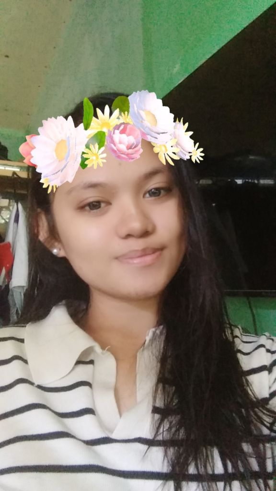

Maligayang Pagdating sa aming Grade 10 ESP Learning Website!
Ang website na ito ay ginawa upang makatulong sa mga mag-aaral na mas maunawaan ang mga aralin tungkol sa pagpapakatao, pagpapahalaga, pananagutan, at mabuting pakikipagkapwa.
Ang Edukasyon sa Pagpapakatao ay hindi lamang tungkol sa pagsasaulo ng mga konsepto, ito ay tungkol sa paghubog ng ating pagkatao at paggamit ng ating kaalaman sa tunay na buhay.📚 Mga Aralin
Aralin 1: Pagpapahalaga
Pag-unawa sa kahalagahan ng mga pagpapahalaga sa paggawa ng tamang desisyon at pagkilos.
- Pagkilala sa sariling pagpapahalaga
- Pagpapakita ng mabuting asal
- Paggalang sa kapwa
Aralin 2: Pananagutan
Ang bawat tao ay may pananagutan sa sarili, pamilya, paaralan, at lipunan.
- Pagtupad sa tungkulin
- Pananagutan sa kilos
- Pagiging responsable
Aralin 3: Pakikipagkapwa
Mahalaga ang mabuting ugnayan sa kapwa upang magkaroon ng mapayapa at maayos na pamayanan.
- Empatiya
- Pakikinig
- Paggalang sa pagkakaiba
Aralin 4: Pagpapasya
Matutong gumawa ng matalino, makatarungan, at responsableng desisyon.
- Pagsusuri ng sitwasyon
- Pagkilala sa bunga ng kilos
- Pagpili ng tama
Aralin 5: Kabutihang Panlahat
Ang kabutihang panlahat ay tumutukoy sa mga bagay na nakatutulong sa kapakanan ng lahat.
- Pakikilahok sa komunidad
- Pagtutulungan
- Pagiging mabuting mamamayan
Aralin 6: Pagiging Mabuting Tao
Ang mabuting pagkatao ay naipapakita sa pamamagitan ng tamang salita, kilos, at pakikitungo sa iba.
- Katapatan
- Paggalang
- Pagmamalasakit
🎯 Mga Gawain
Gawain 1: Values Reflection
Maglista ng tatlong pagpapahalaga na mahalaga sa iyo. Ipaliwanag kung paano mo ito naipapakita sa iyong pang-araw-araw na buhay.
Gawain 2: Tama o Mali?
Magbigay ng limang sitwasyon kung saan kailangang pumili sa pagitan ng tama at mali. Isulat kung ano ang iyong magiging desisyon at bakit.
Gawain 3: Kabutihan Challenge
Gumawa ng isang simpleng mabuting gawain para sa iyong pamilya, kaklase, o komunidad.
Gawain 4: My Decision
Pumili ng isang sitwasyon na nangangailangan ng pagpapasya. Tukuyin ang problema, mga pagpipilian, posibleng bunga, at iyong desisyon.
📖 Learning Resources
📘 ESP 10 Learning Materials 📝 Review Notes 📄 Activity Worksheets 🎥 Educational Videos 📚 Mga Karagdagang Babasahin👤 About Me

Hi! Ako si Mica L. Sy
Ako ay isang mag-aaral ng Baitang 10-EROS na interesado sa pag-aaral ng Edukasyon sa Pagpapakatao.
Ginawa ko ang website na ito upang makapagbahagi ng mga aralin, gawain, at resources na makatutulong sa mga kapwa mag-aaral na matuto tungkol sa mabuting pagpapakatao.
Grade: 10-EROS
Subject: ESP